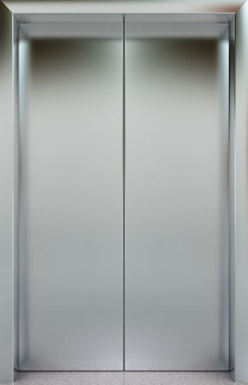

<!--<script src="../../../../main.js"></script>-->
<div class="mainwrap">
	<div class="header"><span>监控管理</span>><span>实时数据监测</span>><span>实时电梯监测</span></div>
	<div class="main">
		<div class="main-choose-list overflowH">
			<!--搜索-->
			<em id="estateName" style="line-height: 34px;"><!--和平里小区--></em>
			<button type="button" class="btn btn-default pull-right" onclick="backPrev()">返回</button>
		</div>
		<div class="mainShow">
			<ul>

			</ul>
		</div>
	</div>
</div>
<script type="text/x-handlebars-template" id="elevatorList">
{{#each this}}
	<li onclick="getRealInfo('{{RealEleId}}')">
		<div class="showImg">
			<div class="showLeft">
				{{#if RealOnline}}
				<span class="icon-icon_zaixian2"></span>
				<div>
					{{#if RealDoor}}
					
					{{else}}
					
					{{/if}}
				</div>
				{{else}}
				<span class="icon-icon_sign_outline"></span>
				<div> 
					 
				</div>
				{{/if}}
				
			</div>
			<div class="showRight  {{ifOnline RealOnline}}">
				{{#unless RealFault}}
				<span class="fault">故障</span>
				{{else}}
				<span class="normal">正常</span>
				{{/unless}}
				<div class="direct {{transformat RealDirection}}">
					<span class="icon-icon_dt_up lightBlack"></span>
					<span>{{RealFloor}}</span>
					<span class="icon-icon_dt_down lightBlack"></span>
				</div>
			</div>
		</div>
		<div class="showText">
			<p title="{{EleJobNo}}">电梯名称：{{EleJobNo}}</p>
		</div>
	</li>
{{/each}}
</script>
<script>
  function addSrcFun(obj) {
    $(obj).attr("src","../../images/elevator.gif?"+Math.random());
  }

   // $("#hiddenCommonValue").attr("disId",$(obj).attr("data-disId"));
    var socket=createSocket(socktUrl+'/EleRealStatusForDis');
   	socket1=socket;
    var mainShow=$(".mainShow");
    var myTemplate = Handlebars.compile($("#elevatorList").html());

    socket.onopen=function () {
      socket.send($("#hiddenCommonValue").attr("disId"));
    }
    socket.onmessage=function (e) {
      var data=JSON.parse(e.data);
      console.log("电梯实时数据:",data);
      if (data.Code === 1){
        Handlebars.registerHelper("transformat",function(value){
          if(value==0){
            return "";
          }else if(value==1){
            return "firstStyle";
          }else {
            return "secondStyle"
          }
        });
        Handlebars.registerHelper("ifOnline",function(value){
          if(value==0){
            return "offlineStyle";
          }else {
            return " "
          }
        });
        $('.mainShow ul').html(myTemplate(data.Obj));
        $("#estateName").html(data.Obj[0].DisName);
      }
    }

	//跳转到实时信息中
    var rightContent=$(".rightContent");
	function getRealInfo(realEleId) {
    $("#hiddenCommonValue").attr("realEleId",realEleId);
      $.ajax({
        url: 'views/monitoringManagement/realInfo.html',
        context: rightContent,
        success: function(data){
          socket1.close();
          console.log('断开前一个.');
          $(this).html(data);
        }});
    }
    //返回上一页，
	function backPrev() {
		  $.ajax({
			url: 'views/monitoringManagement/estateDescribe.html',
			context: rightContent,
			success: function(data){
              /*console.log(socket1)*/
              socket1.close();
              console.log('断开前一个.');
			  $(this).html(data);
			}});
    }
</script>


